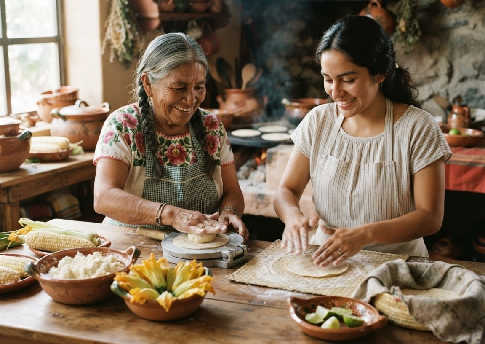

El territorio da contexto
Una receta no existe aislada. El clima, los ingredientes disponibles y la vida de cada localidad ayudan a comprender lo que llega a la mesa.
CONOCER, COMPARTIR Y CONSERVAR
SIGEPA es el Sistema Georreferenciado y Participativo para la Preservación y Sustentabilidad del Patrimonio Gastronómico Mexicano.
Un espacio para acercarnos a las cocinas de México desde sus lugares y sus personas. Reunimos recetas compartidas por la comunidad, con ingredientes, instrucciones e historias que pueden seguir vivas en otras mesas.

Una receta no existe aislada. El clima, los ingredientes disponibles y la vida de cada localidad ayudan a comprender lo que llega a la mesa.
Quienes cocinan comparten sus propias versiones, historias y maneras de nombrar los ingredientes. La diversidad es parte de esta memoria.
Reconocer los productos de temporada, aprovechar los ingredientes y respetar los saberes locales abre una conversación sobre el futuro de nuestra cocina.
UNA MEMORIA EN MOVIMIENTO
Puedes comenzar con una búsqueda o con esa receta que siempre preparan en casa.
Elige un estado en el mapa o busca por platillo e ingredientes. Conoce quién comparte cada receta y el lugar de donde viene.
Ir a explorar México →Crea una cuenta y publica una receta con tus fotos, cantidades, pasos y ubicación. Reconoce a quienes te enseñaron.
Publicar una receta →Guarda tus favoritas, llévalas a tu cocina y conversa sobre ellas. Respetar el contexto también es una forma de preservar.
Ver mis favoritos →Las preparaciones cambian entre regiones, comunidades y familias. SIGEPA busca dar espacio a esas voces, sin presentar una versión como la única auténtica. Cada aporte conserva su autoría y debe compartirse con permiso y respeto.
Al publicar una receta confirmas que el texto y las fotografías son tuyos o que tienes permiso para compartirlos. Cada aporte conserva la autoría de quien lo comparte. El equipo de SIGEPA revisa las recetas antes de mostrarlas en el mapa y puede ocultar comentarios o contenidos que no respeten a la comunidad.
Guardamos tu nombre, tu correo y tu contraseña cifrada para administrar tu cuenta. Tu correo no se muestra a otras personas. La ubicación de una receta corresponde a la localidad de origen, nunca a un domicilio. Tus favoritos y borradores se guardan solo en tu navegador.